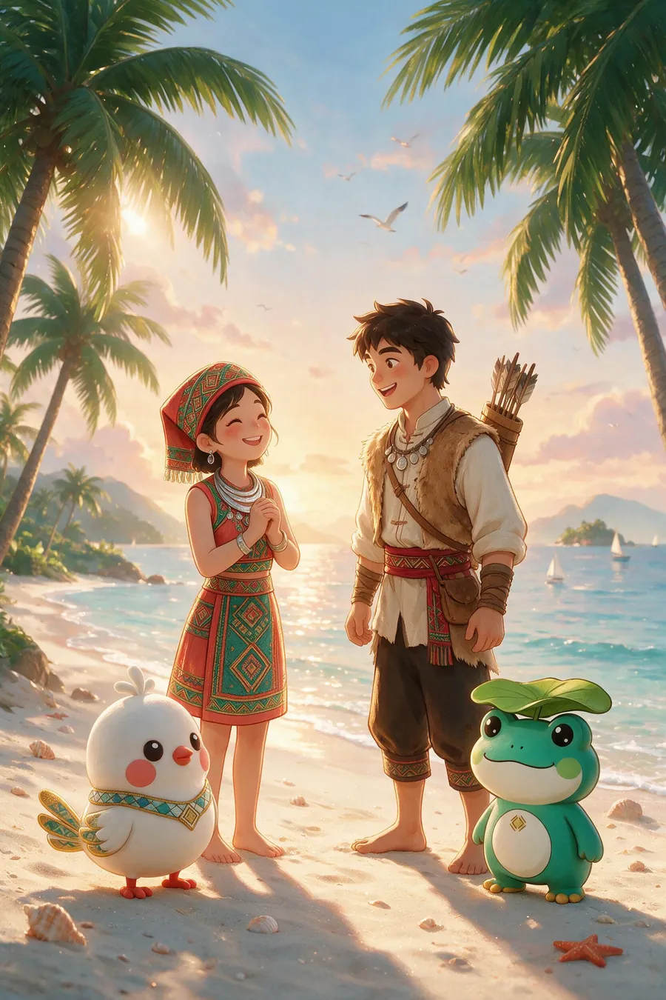
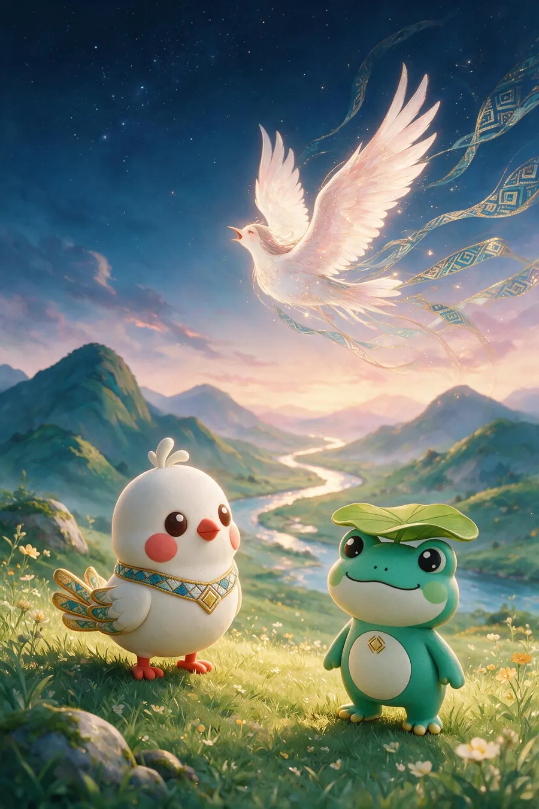
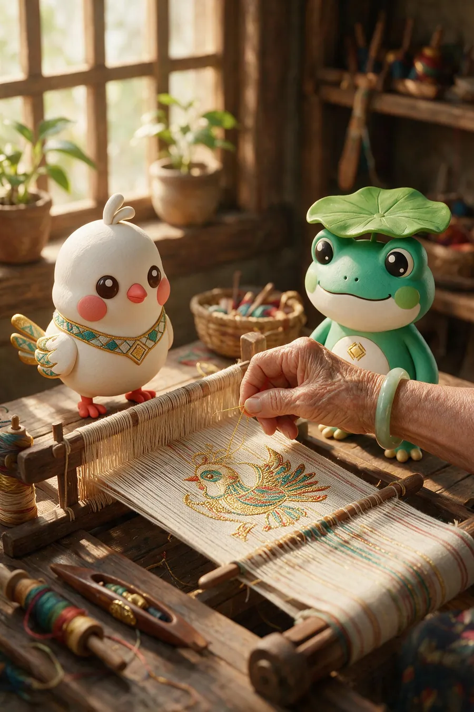
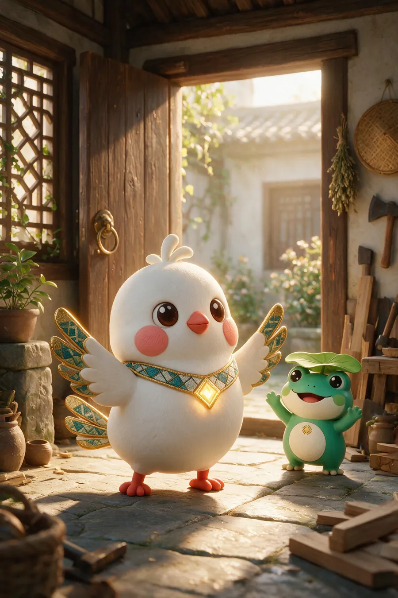
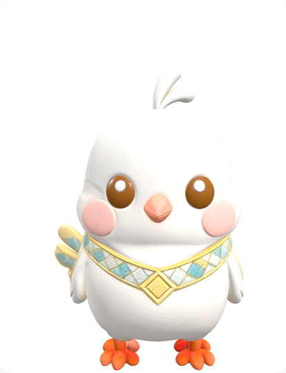

海南黎族 · 国家级非物质文化遗产Hainan Li Heritage · National Intangible Cultural Heritage
甘工鸟传说The Legend of the Gan Gong Bird
黎族最古老的故事之一：少女为爱化作神鸟，日夜啼鸣"甘工、甘工"；黎锦把这份思念织进丝线。故事从黎寨出发，一路飞到星辰与大海。这是甘米米与呱噜噜的起点，也是整个"文化出海"的精神内核。One of the oldest Li legends: a girl becomes a sacred bird and sings "Gan-gong, Gan-gong" day and night for love and freedom; Li brocade weaves that longing into thread. The story flies from the Li village to the stars and the sea. It is where Ganmimi and Gualulu began, and the heart of this whole journey.
顺着这条织线，读一段传说。Follow the thread and read the tale.
 壹
甘工鸟纹 · 忠贞Bird motif · devotion
壹
甘工鸟纹 · 忠贞Bird motif · devotion
第一章 · 相遇Chapter I · The Encounter
故事，从一声鸟鸣开始It begins with a chirp
故事从黎寨的清晨开始。风把椰叶吹得沙沙响，鸟鸣一声接一声。甘米米睁开眼睛，奶奶正坐在织机前，把一段很老很老的传说，织进黎锦里。The tale begins at dawn in a Li village. The wind rustles the coconut palms and the birds sing, one after another. Ganmimi opens her eyes; Grandma sits at her loom, weaving a very old story into the brocade.
「每个黎族孩子，都是听着鸟鸣长大的。」"Every Li child grows up listening to the birds."

贰 人形纹 · 记录Human motif · memory第二章 · 相恋Chapter II · The Vow
椰林下的约定A vow under the palms
很久很久以前，黎寨有个爱唱歌的少女。她在椰林里遇见一个青年，两人在月光下许下约定：一生一世，不离不弃。黎锦上的人形纹，把这一刻悄悄记了下来。Long ago, a girl who loved to sing lived in the Li village. In the coconut grove she met a young man, and under the moonlight they vowed to stay together, always. The human motif in Li brocade quietly kept that moment.
「椰林下的约定，织进丝线就不会散。」"A vow made in the grove, once woven, never fades."
 叁
甘工鸟纹 · 执念Bird motif · longing
叁
甘工鸟纹 · 执念Bird motif · longing
第三章 · 离别Chapter III · The Parting
命运，没有成全他们Fate did not grant them
可命运没有成全这对恋人。少女被迫远嫁，与爱人天各一方。临行前的夜晚，她望着月亮，把最后的心愿说给风听：如果我不能留下，就让我变成一只鸟，永远留在这片椰林。But fate tore the lovers apart. The girl was forced to marry far away. On the last night, she looked at the moon and whispered her final wish to the wind: if I cannot stay, let me become a bird, and live forever in this grove.
「我宁愿化作飞鸟。」"I would rather become a bird."

肆 化鸟 · 灵魂不灭The bird · eternal第四章 · 化鸟Chapter IV · The Sacred Bird
甘工、甘工，日夜不息Gan-gong, Gan-gong, day and night
第二天清晨，一只雪白的鸟从黎寨飞起。它绕着椰林盘旋，日夜啼鸣：甘工、甘工。黎家人说，那是少女的声音，她在用一生呼唤爱与自由。从此，甘工鸟成了黎族人心头最深的执念。At dawn, a snow-white bird rose from the Li village. It circled the grove, singing day and night: Gan-gong, Gan-gong. The Li people say it is the girl's voice, calling for love and freedom for all her days. From then on, the Gan Gong Bird became the deepest longing in Li hearts.
「甘工、甘工，爱与自由，日夜不息。」"Gan-gong, Gan-gong. Love and freedom, unending."

伍 黎锦 · 2009 年入列 UNESCO 急需保护名录Li brocade · UNESCO 2009第五章 · 织锦Chapter V · The Weave
每一针，都藏着故事Every stitch holds a story
思念不能说话，但可以织。黎家阿妈把甘工鸟纹织进黎锦，把思念织进丝线。纹样会说话，故事不会断。2009 年，黎族传统纺染织绣技艺被联合国教科文组织列入"急需保护的非物质文化遗产名录"。今天，我们依然能从一条黎锦里，听见那只鸟的啼鸣。Longing cannot speak, but it can be woven. Li mothers weave the Gan Gong Bird into brocade, and weave their longing into thread. Motifs speak, and stories never end. In 2009, the traditional Li textile techniques were inscribed on UNESCO's List of Intangible Cultural Heritage in Need of Urgent Safeguarding. Even today, a single piece of Li brocade still carries the bird's song.
「纹样会说话，故事不会断。」"Motifs speak, and stories never end."

陆 文化出海 · 从黎寨到世界Going global · village to world第六章 · 出海Chapter VI · Going Global
今天，甘米米衔着传说出发Today, Ganmimi carries the tale out
今天，甘米米衔着这段传说出发了。漫画、短片、多语之声，再到 IP 手办：黎族最古老的故事，开始被世界听见。而每一件被带走的礼物，都在替海南说一句话。Today, Ganmimi sets off with this legend. Comics, films, voices in many languages, and IP figurines: the oldest Li story is finally being heard around the world. And every piece taken home speaks for Hainan.
「故事从这里起飞。」"The story takes flight from here."
纹样与传说小词典A Little Dictionary of Motifs
读懂黎锦，就读懂了黎家人的心事。Read the brocade, and you read the Li heart.
传说源流The Origin
甘工鸟传说流传于海南黎族民间，讲述少女为爱化鸟、啼鸣不止的故事，是黎族"爱与自由"的精神符号，也是黎锦甘工鸟纹的来源。
The Gan Gong Bird legend circulates among Hainan's Li people. It tells of a girl who became a bird and sang endlessly for love: the Li symbol of love and freedom, and the origin of the bird motif in Li brocade.
纹样含义The Motifs
黎锦纹样里，甘工鸟纹象征忠贞与思念；人形纹记录生活与祖先；蛙纹承载黎族对生命繁衍的崇拜。一针一线，皆有来处。
In Li brocade, the bird motif stands for devotion and longing; the human motif records life and ancestors; the frog motif honors fertility and new life. Every stitch has its source.
非遗地位The Heritage
黎族传统纺染织绣技艺，2009 年列入联合国教科文组织"急需保护的非物质文化遗产名录"，世界承认了这份来自海南的匠心。
In 2009, the traditional Li textile techniques of spinning, dyeing, weaving and embroidering were inscribed on UNESCO's List of Intangible Cultural Heritage in Need of Urgent Safeguarding: the world recognized this craft from Hainan.


传说长出翅膀之后After the legend grows wings
被甘米米打动了吗？Moved by Ganmimi?
把故事带回家，也把海南文化带向世界。
Take the story home, and carry Hainan's culture out to the world.